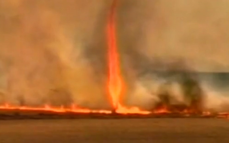
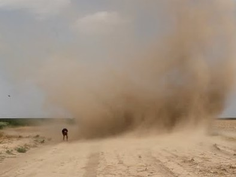

As a wildfire heats up it can draw in more of the surrounding wind inwards. As the updraft continues powerful winds gust inwards. It prevents the fire from spreading on the wind, but the high updraft creates turbulence around the fire. The strong winds can change direction erratically, causing it to move randomly. It can also produce tornados or dust devils that can damage nearby structures.
 